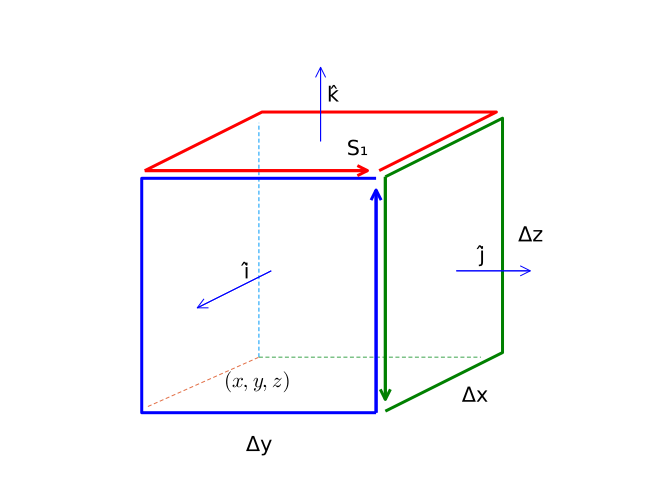
61 The Gradient, Divergence, and Curl
This section uses these add-on packages:
using CalculusWithJulia
using Plots
using SymPyThe gradient of a scalar function \(f:R^n \rightarrow R\) is a vector field of partial derivatives. In \(R^2\), we have:
\[ \nabla{f} = \langle \frac{\partial{f}}{\partial{x}}, \frac{\partial{f}}{\partial{y}} \rangle. \]
It has the interpretation of pointing out the direction of greatest ascent for the surface \(z=f(x,y)\).
We move now to two other operations, the divergence and the curl, which combine to give a language to describe vector fields in \(R^3\).
61.1 The divergence
Let \(F:R^3 \rightarrow R^3 = \langle F_x, F_y, F_z\rangle\) be a vector field. Consider now a small box-like region, \(R\), with surface, \(S\), on the cartesian grid, with sides of length \(\Delta x\), \(\Delta y\), and \(\Delta z\) with \((x,y,z)\) being one corner. The outward pointing unit normals are \(\pm \hat{i}, \pm\hat{j},\) and \(\pm\hat{k}\).
Consider the sides with outward normal \(\hat{i}\). The contribution to the surface integral, \(\oint_S (F\cdot\hat{N})dS\), could be approximated by
\[ \left(F(x + \Delta x, y, z) \cdot \hat{i}\right) \Delta y \Delta z, \]
whereas, the contribution for the face with outward normal \(-\hat{i}\) could be approximated by:
\[ \left(F(x, y, z) \cdot (-\hat{i}) \right) \Delta y \Delta z. \]
The functions are being evaluated at a point on the face of the surface. For Riemann integrable functions, any point in a partition may be chosen, so our choice will not restrict the generality.
The total contribution of the two would be:
\[ \left(F(x + \Delta x, y, z) \cdot \hat{i}\right) \Delta y \Delta z + \left(F(x, y, z) \cdot (-\hat{i})\right) \Delta y \Delta z = \left(F_x(x + \Delta x, y, z) - F_x(x, y, z)\right) \Delta y \Delta z, \]
as \(F \cdot \hat{i} = F_x\).
Were we to divide by \(\Delta V = \Delta x \Delta y \Delta z\) and take a limit as the volume shrinks, the limit would be \(\partial{F}/\partial{x}\).
If this is repeated for the other two pair of matching faces, we get a definition for the divergence:
The divergence of a vector field \(F:R^3 \rightarrow R^3\) is given by
\[ \text{divergence}(F) = \lim \frac{1}{\Delta V} \oint_S F\cdot\hat{N} dS = \frac{\partial{F_x}}{\partial{x}} +\frac{\partial{F_y}}{\partial{y}} +\frac{\partial{F_z}}{\partial{z}}. \]
The limit expression for the divergence will hold for any smooth closed surface, \(S\), converging on \((x,y,z)\), not just box-like ones.
61.1.1 General \(n\)
The derivation of the divergence is done for \(n=3\), but could also have easily been done for two dimensions (\(n=2\)) or higher dimensions \(n>3\). The formula in general would be: for \(F(x_1, x_2, \dots, x_n): R^n \rightarrow R^n\):
\[ \text{divergence}(F) = \sum_{i=1}^n \frac{\partial{F_i}}{\partial{x_i}}. \]
In Julia, the divergence can be implemented different ways depending on how the problem is presented. Here are two functions from the CalculusWithJulia package for when the problem is symbolic or numeric:
divergence(F::Vector{Sym}, vars) = sum(diff.(F, vars))
divergence(F::Function, pt) = sum(diag(ForwardDiff.jacobian(F, pt)))The latter being a bit inefficient, as all \(n^2\) partial derivatives are found, but only the \(n\) diagonal ones are used.
61.2 The curl
Before considering the curl for \(n=3\), we derive a related quantity in \(n=2\). The “curl” will be a measure of the microscopic circulation of a vector field. To that end we consider a microscopic box-region in \(R^2\):
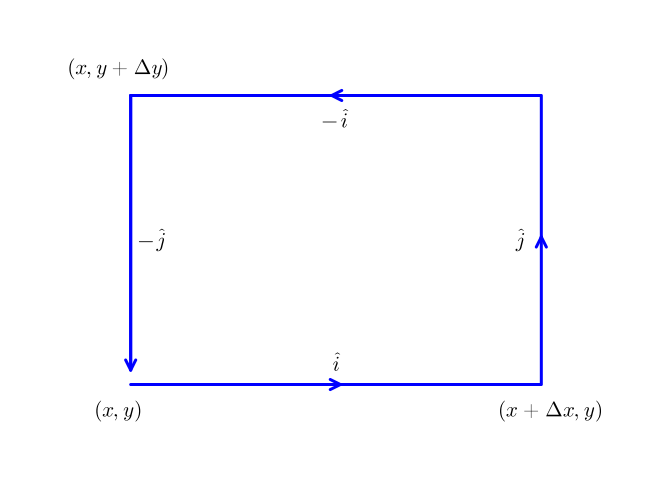
Let \(F=\langle F_x, F_y\rangle\). For small enough values of \(\Delta{x}\) and \(\Delta{y}\) the line integral, \(\oint_C F\cdot d\vec{r}\) can be approximated by \(4\) terms:
\[\begin{align*} \left(F(x,y) \cdot \hat{i}\right)\Delta{x} &+ \left(F(x+\Delta{x},y) \cdot \hat{j}\right)\Delta{y} + \left(F(x,y+\Delta{y}) \cdot (-\hat{i})\right)\Delta{x} + \left(F(x,y) \cdot (-\hat{j})\right)\Delta{x}\\ &= F_x(x,y) \Delta{x} + F_y(x+\Delta{x},y)\Delta{y} + F_x(x, y+\Delta{y}) (-\Delta{x}) + F_y(x,y) (-\Delta{y})\\ &= (F_y(x + \Delta{x}, y) - F_y(x, y))\Delta{y} - (F_x(x, y+\Delta{y})-F_x(x,y))\Delta{x}. \end{align*}\]
The Riemann approximation allows a choice of evaluation point for Riemann integrable functions, and the choice here lends itself to further analysis. Were the above divided by \(\Delta{x}\Delta{y}\), the area of the box, and a limit taken, partial derivatives appear to suggest this formula:
\[ \lim \frac{1}{\Delta{x}\Delta{y}} \oint_C F\cdot d\vec{r} = \frac{\partial{F_y}}{\partial{x}} - \frac{\partial{F_x}}{\partial{y}}. \]
The scalar function on the right hand side is called the (two-dimensional) curl of \(F\) and the left-hand side lends itself as a measure of the microscopic circulation of the vector field, \(F:R^2 \rightarrow R^2\).
Consider now a similar scenario for the \(n=3\) case. Let \(F=\langle F_x, F_y,F_z\rangle\) be a vector field and \(S\) a box-like region with side lengths \(\Delta x\), \(\Delta y\), and \(\Delta z\), anchored at \((x,y,z)\).
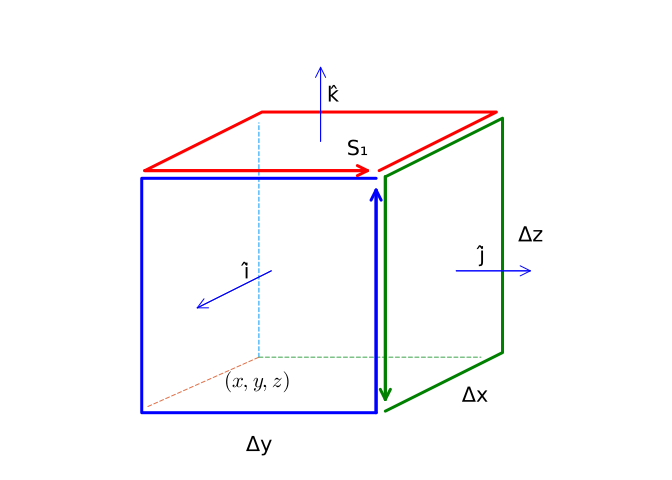
The box-like volume in space with the top area, with normal \(\hat{k}\), designated as \(S_1\). The curve \(C_1\) traces around \(S_1\) in a counter clockwise manner, consistent with the right-hand rule pointing in the outward normal direction. The face \(S_1\) with unit normal \(\hat{k}\) looks like:
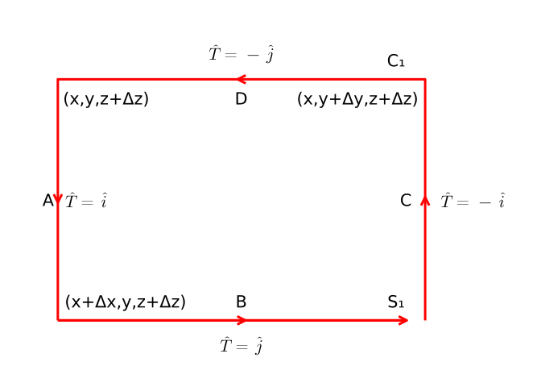
Now we compute the line integral. Consider the top face, \(S_1\), connecting \((x,y,z+\Delta z), (x + \Delta x, y, z + \Delta z), (x + \Delta x, y + \Delta y, z + \Delta z), (x, y + \Delta y, z + \Delta z)\), Using the right hand rule, parameterize the boundary curve, \(C_1\), in a counter clockwise direction so the right hand rule yields the outward pointing normal (\(\hat{k}\)). Then the integral \(\oint_{C_1} F\cdot \hat{T} ds\) is approximated by the following Riemann sum of \(4\) terms:
\[\begin{align*} F(x,y, z+\Delta{z}) \cdot \hat{i}\Delta{x} &+ F(x+\Delta x, y, z+\Delta{z}) \cdot \hat{j} \Delta y \\ &+ F(x, y+\Delta y, z+\Delta{z}) \cdot (-\hat{i}) \Delta{x} \\ &+ F(x, y, z+\Delta{z}) \cdot (-\hat{j}) \Delta{y}. \end{align*}\]
(The points \(c_i\) are chosen from the endpoints of the line segments.)
\[\begin{align*} \oint_{C_1} F\cdot \hat{T} ds &\approx (F_y(x+\Delta x, y, z+\Delta{z}) \\ &- F_y(x, y, z+\Delta{z})) \Delta{y} \\ &- (F_x(x,y + \Delta{y}, z+\Delta{z}) \\ &- F_x(x, y, z+\Delta{z})) \Delta{x} \end{align*}\]
As before, were this divided by the area of the surface, we have after rearranging and cancellation:
\[\begin{align*} \frac{1}{\Delta{S_1}} \oint_{C_1} F \cdot \hat{T} ds &\approx \frac{F_y(x+\Delta x, y, z+\Delta{z}) - F_y(x, y, z+\Delta{z})}{\Delta{x}}\\ &- \frac{F_x(x, y+\Delta y, z+\Delta{z}) - F_x(x, y, z+\Delta{z})}{\Delta{y}}. \end{align*}\]
In the limit, as \(\Delta{S} \rightarrow 0\), this will converge to \(\partial{F_y}/\partial{x}-\partial{F_x}/\partial{y}\).
Had the bottom of the box been used, a similar result would be found, up to a minus sign.
Unlike the two dimensional case, there are other directions to consider and here the other sides will yield different answers. Consider now the face connecting \((x,y,z), (x+\Delta{x}, y, z), (x+\Delta{x}, y, z + \Delta{z})\), and $ (x,y,z+)$ with outward pointing normal \(-\hat{j}\). Let \(S_2\) denote this face and \(C_2\) describe its boundary. Orient this curve so that the right hand rule points in the \(-\hat{j}\) direction (the outward pointing normal). Then, as before, we can approximate:
\[\begin{align*} \oint_{C_2} F \cdot \hat{T} ds &\approx F(x,y,z) \cdot \hat{i} \Delta{x} \\ &+ F(x+\Delta{x},y,z) \cdot \hat{k} \Delta{z} \\ &+ F(x,y,z+\Delta{z}) \cdot (-\hat{i}) \Delta{x} \\ &+ F(x, y, z) \cdot (-\hat{k}) \Delta{z}\\ &= (F_z(x+\Delta{x},y,z) - F_z(x, y, z))\Delta{z} - (F_x(x,y,z+\Delta{z}) - F(x,y,z)) \Delta{x}. \end{align*}\]
Dividing by \(\Delta{S}=\Delta{x}\Delta{z}\) and taking a limit will give:
\[ \lim \frac{1}{\Delta{S}} \oint_{C_2} F \cdot \hat{T} ds = \frac{\partial{F_z}}{\partial{x}} - \frac{\partial{F_x}}{\partial{z}}. \]
Had, the opposite face with outward normal \(\hat{j}\) been chosen, the answer would differ by a factor of \(-1\).
Similarly, let \(S_3\) be the face with outward normal \(\hat{i}\) and curve \(C_3\) bounding it with parameterization chosen so that the right hand rule points in the direction of \(\hat{i}\). This will give
\[ \lim \frac{1}{\Delta{S}} \oint_{C_3} F \cdot \hat{T} ds = \frac{\partial{F_z}}{\partial{y}} - \frac{\partial{F_y}}{\partial{z}}. \]
In short, depending on the face chosen, a different answer is given, but all have the same type.
Define the curl of a \(3\)-dimensional vector field \(F=\langle F_x,F_y,F_z\rangle\) by:
\[ \text{curl}(F) = \langle \frac{\partial{F_z}}{\partial{y}} - \frac{\partial{F_y}}{\partial{z}}, \frac{\partial{F_x}}{\partial{z}} - \frac{\partial{F_z}}{\partial{x}}, \frac{\partial{F_y}}{\partial{x}} - \frac{\partial{F_x}}{\partial{y}} \rangle. \]
If \(S\) is some surface with closed boundary \(C\) oriented so that the unit normal, \(\hat{N}\), of \(S\) is given by the right hand rule about \(C\), then
\[ \hat{N} \cdot \text{curl}(F) = \lim \frac{1}{\Delta{S}} \oint_C F \cdot \hat{T} ds. \]
The curl has a formal representation in terms of a \(3\times 3\) determinant, similar to that used to compute the cross product, that is useful for computation:
\[ \text{curl}(F) = \det \begin{bmatrix} \hat{i} & \hat{j} & \hat{k}\\ \frac{\partial}{\partial{x}} & \frac{\partial}{\partial{y}} & \frac{\partial}{\partial{z}}\\ F_x & F_y & F_z \end{bmatrix} \]
In Julia, the curl can be implemented different ways depending on how the problem is presented. We will use the Jacobian matrix to compute the required partials. If the Jacobian is known, this function from the CalculusWithJulia package will combine the off-diagonal terms appropriately:
function curl(J::Matrix)
Mx, Nx, Px, My, Ny, Py, Mz, Nz, Pz = J
[Py-Nz, Mz-Px, Nx-My] # ∇×VF
endThe computation of the Jacobian differs whether the problem is treated numerically or symbolically. Here are two functions:
curl(F::Vector{Sym}, vars=free_symbols(F)) = curl(F.jacobian(vars))
curl(F::Function, pt) = curl(ForwardDiff.jacobian(F, pt))61.2.1 The \(\nabla\) (del) operator
The divergence, gradient, and curl all involve partial derivatives. There is a notation employed that can express the operations more succinctly. Let the Del operator be defined in Cartesian coordinates by the formal expression:
\[ \nabla = \langle \frac{\partial}{\partial{x}}, \frac{\partial}{\partial{y}}, \frac{\partial}{\partial{z}} \rangle. \]
This is a vector differential operator that acts on functions and vector fields through the typical notation to yield the three operations:
\[\begin{align*} \nabla{f} &= \langle \frac{\partial{f}}{\partial{x}}, \frac{\partial{f}}{\partial{y}}, \frac{\partial{f}}{\partial{z}} \rangle, \quad\text{the gradient;}\\ \nabla\cdot{F} &= \langle \frac{\partial}{\partial{x}}, \frac{\partial}{\partial{y}}, \frac{\partial}{\partial{z}} \rangle \cdot F \\ &= \langle \frac{\partial}{\partial{x}}, \frac{\partial}{\partial{y}}, \frac{\partial}{\partial{z}} \rangle \cdot \langle F_x, F_y, F_z \rangle \\ &= \frac{\partial{F_x}}{\partial{x}} + \frac{\partial{F_y}}{\partial{y}} + \frac{\partial{F_z}}{\partial{z}},\quad\text{the divergence;}\\ \nabla\times F &= \langle \frac{\partial}{\partial{x}}, \frac{\partial}{\partial{y}}, \frac{\partial}{\partial{z}} \rangle \times F = \det \begin{bmatrix} \hat{i} & \hat{j} & \hat{k} \\ \frac{\partial}{\partial{x}}& \frac{\partial}{\partial{y}}& \frac{\partial}{\partial{z}}\\ F_x & F_y & F_z \end{bmatrix} ,\quad\text{the curl}. \end{align*}\]
Note
Mathematically operators have not been seen previously, but the concept of an operation on a function that returns another function is a common one when using Julia. We have seen many examples (plot, D, quadgk, etc.). In computer science such functions are called higher order functions, as they accept arguments which are also functions.
In the CalculusWithJulia package, the constant \nabla[\tab], producing \(\nabla\) implements this operator for functions and symbolic expressions.
@syms x::real y::real z::real(x, y, z)f(x,y,z) = x*y*z
f(v) = f(v...)
F(x,y,z) = [x, y, z]
F(v) = F(v...)
∇(f(x,y,z)) # symbolic operation on the symbolic expression f(x,y,z)3-element Vector{Sym}:
y⋅z
x⋅z
x⋅yThis usage of ∇ takes partial derivatives according to the order given by:
free_symbols(f(x,y,z))3-element Vector{Sym}:
x
y
zwhich may not be as desired. In this case, the variables can be specified using a tuple to pair up the expression with the variables to differentiate against:
∇( (f(x,y,z), [x,y,z]) )3-element Vector{Sym}:
y⋅z
x⋅z
x⋅yFor numeric expressions, we have:
∇(f)(1,2,3) # a numeric computation. Also can call with a point [1,2,3]3-element Vector{Int64}:
6
3
2(The extra parentheses are unfortunate. Here ∇ is called like a function.)
The divergence can be found symbolically:
∇ ⋅ F(x,y,z)
\[
3
\]
Or numerically:
(∇ ⋅ F)(1,2,3) # a numeric computation. Also can call (∇ ⋅ F)([1,2,3])3.0Similarly, the curl. Symbolically:
∇ × F(x,y,z)3-element Vector{Sym}:
0
0
0and numerically:
(∇ × F)(1,2,3) # numeric. Also can call (∇ × F)([1,2,3])3-element Vector{Float64}:
0.0
0.0
0.0There is a subtle difference in usage. Symbolically the evaluation of F(x,y,z) first is desired, numerically the evaluation of ∇ ⋅ F or ∇ × F first is desired. As ⋅ and × have lower precedence than function evaluation, parentheses must be used in the numeric case.
Note
As mentioned, for the symbolic evaluations, a specification of three variables (here x, y, and z) is necessary. This use takes free_symbols to identify three free symbols which may not always be the case. (It wouldn’t be for, say, F(x,y,z) = [a*x,b*y,0], a and b constants.) In those cases, the notation accepts a tuple to specify the function or vector field and the variables, e.g. (∇( (f(x,y,z), [x,y,z]) ), as illustrated; ∇ × (F(x,y,z), [x,y,z]); or ∇ ⋅ (F(x,y,z), [x,y,z]) where this is written using function calls to produce the symbolic expression in the first positional argument, though a direct expression could also be used. In these cases, the named versions gradient, curl, and divergence may be preferred.
61.3 Interpretation
The divergence and curl measure complementary aspects of a vector field. The divergence is defined in terms of flow out of an infinitesimal box, the curl is about rotational flow around an infinitesimal area patch.
Let \(F(x,y,z) = [x, 0, 0]\), a vector field pointing in just the \(\hat{i}\) direction. The divergence is simply \(1\). If \(V\) is a box, as in the derivation, then the divergence measures the flow into the side with outward normal \(-\hat{i}\) and through the side with outward normal \(\hat{i}\) which will clearly be positive as the flow passes through the region \(V\), increasing as \(x\) increases, when \(x > 0\).
The radial vector field \(F(x,y,z) = \langle x, y, z \rangle\) is also an example of a divergent field. The divergence is:
F(x,y,z) = [x,y,z]
∇ ⋅ F(x,y,z)
\[
3
\]
There is a constant outward flow, emanating from the origin. Here we picture the field when \(z=0\):
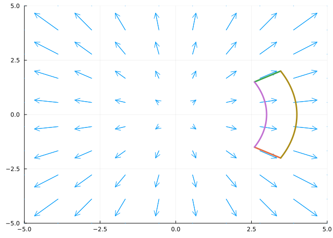
Consider the limit definition of the divergence:
\[ \nabla\cdot{F} = \lim \frac{1}{\Delta{V}} \oint_S F\cdot\hat{N} dA. \]
In the vector field above, the shape along the curved edges has constant magnitude field. On the left curved edge, the length is smaller and the field is smaller than on the right. The flux across the left edge will be less than the flux across the right edge, and a net flux will exist. That is, there is divergence.
Now, were the field on the right edge less, it might be that the two balance out and there is no divergence. This occurs with the inverse square laws, such as for gravity and electric field:
R = [x,y,z]
Rhat = R/norm(R)
VF = (1/norm(R)^2) * Rhat
∇ ⋅ VF |> simplify
\[
0
\]
The vector field \(F(x,y,z) = \langle -y, x, 0 \rangle\) is an example of a rotational field. It’s curl can be computed symbolically through:
curl([-y,x,0], [x,y,z])3-element Vector{Sym}:
0
0
2This vector field rotates as seen in this figure showing slices for different values of \(z\):
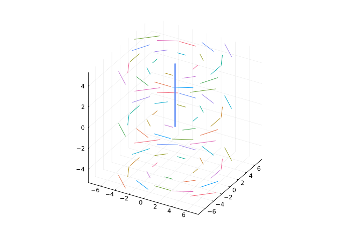
The field has a clear rotation about the \(z\) axis (illustrated with a line), the curl is a vector that points in the direction of the right hand rule as the right hand fingers follow the flow with magnitude given by the amount of rotation.
This is a bit misleading though, the curl is defined by a limit, and not in terms of a large box. The key point for this field is that the strength of the field is stronger as the points get farther away, so for a properly oriented small box, the integral along the closer edge will be less than that along the outer edge.
Consider a related field where the strength gets smaller as the point gets farther away but otherwise has the same circular rotation pattern
R = [-y, x, 0]
VF = R / norm(R)^2
curl(VF, [x,y,z]) .|> simplify3-element Vector{Sym}:
0
0
0Further, the curl of R/norm(R)^3 now points in the opposite direction of the curl of R. This example isn’t typical, as dividing by norm(R) with a power greater than \(1\) makes the vector field discontinuous at the origin.
The curl of the vector field \(F(x,y,z) = \langle 0, 1+y^2, 0\rangle\) is \(0\), as there is clearly no rotation as seen in this slice where \(z=0\):
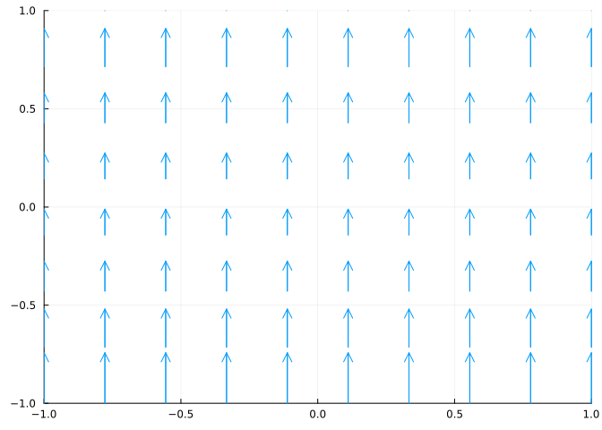
Algebraically, this is so:
curl(Sym[0,1+y^2,0], [x,y,z])3-element Vector{Sym}:
0
0
0Now consider a similar field \(F(x,y,z) = \langle 0, 1+x^2, 0,\rangle\). A slice is somewhat similar, in that the flow lines are all in the \(\hat{j}\) direction:
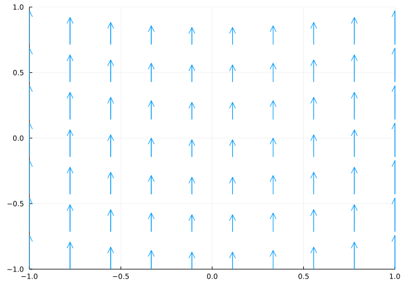
However, this vector field has a curl:
curl([0, 1+x^2,0], [x,y,z])3-element Vector{Sym}:
0
0
2⋅xThe curl points in the \(\hat{k}\) direction (out of the figure). A useful visualization is to mentally place a small paddlewheel at a point and imagine if it will turn. In the constant field case, there is equal flow on both sides of the axis, so it any forces on the wheel blades will balance out. In the latter example, if \(x > 0\), the force on the right side will be greater than the force on the left so the paddlewheel would rotate counter clockwise. The right hand rule for this rotation will point in the upward, or \(\hat{k}\) direction, as seen algebraically in the curl.
Following Strang, in general the curl can point in any direction, so the amount the paddlewheel will spin will be related to how the paddlewheel is oriented. The angular velocity of the wheel will be \((1/2)(\nabla\times{F})\cdot\hat{N}\), \(\hat{N}\) being the normal for the paddlewheel.
If \(\vec{a}\) is some vector and \(\hat{r} = \langle x, y, z\rangle\) is the radial vector, then \(\vec{a} \times \vec{r}\) has a curl, which is given by:
@syms a1 a2 a3
a = [a1, a2, a3]
r = [x, y, z]
curl(a × r, [x,y, z])3-element Vector{Sym}:
2⋅a₁
2⋅a₂
2⋅a₃The angular velocity then is \(\vec{a} \cdot \hat{N}\). The curl is constant. As the dot product involves the cosine of the angle between the two vectors, we see the turning speed is largest when \(\hat{N}\) is parallel to \(\vec{a}\). This gives a similar statement for the curl like the gradient does for steepest growth rate: the maximum rotation rate of \(F\) is \((1/2)\|\nabla\times{F}\|\) in the direction of \(\nabla\times{F}\).
The curl of the radial vector field, \(F(x,y,z) = \langle x, y, z\rangle\) will be \(\vec{0}\):
curl([x,y,z], [x,y,z])3-element Vector{Sym}:
0
0
0We will see that this can be anticipated, as \(F = (1/2) \nabla(x^2+y^2+z^2)\) is a gradient field.
In fact, the curl of any radial field will be \(\vec{0}\). Here we represent a radial field as a scalar function of \(\vec{r}\) time \(\hat{r}\):
@syms H()
R = sqrt(x^2 + y^2 + z^2)
Rhat = [x, y, z]/R
curl(H(R) * Rhat, [x, y, z])3-element Vector{Sym}:
0
0
0Were one to represent the curl in spherical coordinates (below), this follows algebraically from the formula easily enough. To anticipate this, due to symmetry, the curl would need to be the same along any ray emanating from the origin and again by symmetry could only possible point along the ray. Mentally place a paddlewheel along the \(x\) axis oriented along \(\hat{i}\). There will be no rotational forces that could make the wheel spin around the \(x\)-axis, hence the curl must be \(0\).
61.4 The Maxwell equations
The divergence and curl appear in Maxwell’s equations describing the relationships of electromagnetism. In the formulas below the notation is \(E\) is the electric field; \(B\) is the magnetic field; \(\rho\) is the charge density (charge per unit volume); \(J\) the electric current density (current per unit area); and \(\epsilon_0\), \(\mu_0\), and \(c\) are universal constants.
The equations in differential form are:
Gauss’s law: \(\nabla\cdot{E} = \rho/\epsilon_0\).
That is, the divergence of the electric field is proportional to the density. We have already mentioned this in integral form.
Gauss’s law of magnetism: \(\nabla\cdot{B} = 0\)
The magnetic field has no divergence. This says that there no magnetic charges (a magnetic monopole) unlike electric charge, according to Maxwell’s laws.
Faraday’s law of induction: \(\nabla\times{E} = - \partial{B}/\partial{t}\).
The curl of the time-varying electric field is in the direction of the partial derivative of the magnetic field. For example, if a magnet is in motion in the in the \(z\) axis, then the electric field has rotation in the \(x-y\) plane induced by the motion of the magnet.
Ampere’s circuital law: \(\nabla\times{B} = \mu_0J + \mu_0\epsilon_0 \partial{E}/\partial{t}\)
The curl of the magnetic field is related to the sum of the electric current density and the change in time of the electric field.
In a region with no charges (\(\rho=0\)) and no currents (\(J=\vec{0}\)), such as a vacuum, these equations reduce to two divergences being \(0\): \(\nabla\cdot{E} = 0\) and \(\nabla\cdot{B}=0\); and two curl relationships with time derivatives: \(\nabla\times{E}= -\partial{B}/\partial{t}\) and \(\nabla\times{B} = \mu_0\epsilon_0 \partial{E}/\partial{t}\).
We will see later how these are differential forms are consequences of related integral forms.
61.5 Algebra of vector calculus
The divergence, gradient, and curl satisfy several algebraic properties.
Let \(f\) and \(g\) denote scalar functions, \(R^3 \rightarrow R\) and \(F\) and \(G\) be vector fields, \(R^3 \rightarrow R^3\).
61.5.1 Linearity
As with the sum rule of univariate derivatives, these operations satisfy:
\[\begin{align*} \nabla(f + g) &= \nabla{f} + \nabla{g}\\ \nabla\cdot(F+G) &= \nabla\cdot{F} + \nabla\cdot{G}\\ \nabla\times(F+G) &= \nabla\times{F} + \nabla\times{G}. \end{align*}\]
61.5.2 Product rule
The product rule \((uv)' = u'v + uv'\) has related formulas:
\[\begin{align*} \nabla{(fg)} &= (\nabla{f}) g + f\nabla{g} = g\nabla{f} + f\nabla{g}\\ \nabla\cdot{fF} &= (\nabla{f})\cdot{F} + f(\nabla\cdot{F})\\ \nabla\times{fF} &= (\nabla{f})\times{F} + f(\nabla\times{F}). \end{align*}\]
61.5.3 Rules over cross products
The cross product of two vector fields is a vector field for which the divergence and curl may be taken. There are formulas to relate to the individual terms:
\[\begin{align*} \nabla\cdot(F \times G) &= (\nabla\times{F})\cdot G - F \cdot (\nabla\times{G})\\ \nabla\times(F \times G) &= F(\nabla\cdot{G}) - G(\nabla\cdot{F} + (G\cdot\nabla)F-(F\cdot\nabla)G\\ &= \nabla\cdot(BA^t - AB^t). \end{align*}\]
The curl formula is more involved.
61.5.4 Vanishing properties
Surprisingly, the curl and divergence satisfy two vanishing properties. First
The curl of a gradient field is \(\vec{0}\)
\[ \nabla \times \nabla{f} = \vec{0}, \]
if the scalar function \(f\) is has continuous second derivatives (so the mixed partials do not depend on order).
Vector fields where \(F = \nabla{f}\) are conservative. Conservative fields have path independence, so any line integral, \(\oint F\cdot \hat{T} ds\), around a closed loop will be \(0\). But the curl is defined as a limit of such integrals, so it too will be \(\vec{0}\). In short, conservative fields have no rotation.
What about the converse? If a vector field has zero curl, then integrals around infinitesimally small loops are \(0\). Does this also mean that integrals around larger closed loops will also be \(0\), and hence the field is conservative? The answer will be yes, under assumptions. But the discussion will wait for later.
The combination \(\nabla\cdot\nabla{f}\) is defined and is called the Laplacian. This is denoted \(\Delta{f}\). The equation \(\Delta{f} = 0\) is called Laplace’s equation. It is not guaranteed for any scalar function \(f\), but the \(f\) for which it holds are important.
Second,
The divergence of a curl field is \(0\):
\[ \nabla \cdot(\nabla\times{F}) = 0. \]
This is not as clear, but can be seen algebraically as terms cancel. First:
\[\begin{align*} \nabla\cdot(\nabla\times{F}) &= \langle \frac{\partial}{\partial{x}}, \frac{\partial}{\partial{y}}, \frac{\partial}{\partial{z}}\rangle \cdot \langle \frac{\partial{F_z}}{\partial{y}} - \frac{\partial{F_y}}{\partial{z}}, \frac{\partial{F_x}}{\partial{z}} - \frac{\partial{F_z}}{\partial{x}}, \frac{\partial{F_y}}{\partial{x}} - \frac{\partial{F_x}}{\partial{y}} \rangle \\ &= \left(\frac{\partial^2{F_z}}{\partial{y}\partial{x}} - \frac{\partial^2{F_y}}{\partial{z}\partial{x}}\right) + \left(\frac{\partial^2{F_x}}{\partial{z}\partial{y}} - \frac{\partial^2{F_z}}{\partial{x}\partial{y}}\right) + \left(\frac{\partial^2{F_y}}{\partial{x}\partial{z}} - \frac{\partial^2{F_x}}{\partial{y}\partial{z}}\right) \end{align*}\]
Focusing on one component function, \(F_z\) say, we see this contribution:
\[ \frac{\partial^2{F_z}}{\partial{y}\partial{x}} - \frac{\partial^2{F_z}}{\partial{x}\partial{y}}. \]
This is zero under the assumption that the second partial derivatives are continuous.
From the microscopic picture of a box this can also be seen. Again we focus on just the appearance of the \(F_z\) component function. Let the faces with normals \(\hat{i}, \hat{j},-\hat{i}, -\hat{j}\) be labeled \(A, B, C\), and \(D\). This figure shows \(A\) (enclosed in blue) and \(B\) (enclosed in green):
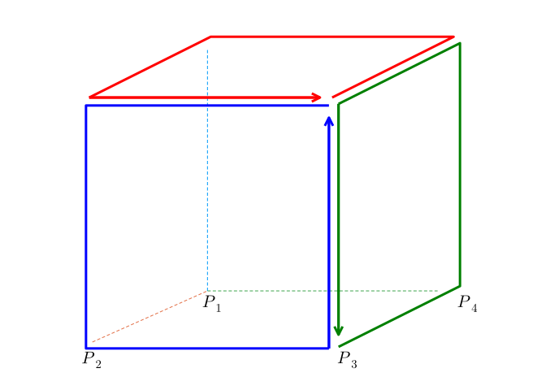
We will get from the approximate surface integral of the approximate curl the following terms:
@syms x y z Δx Δy Δz
p1, p2, p3, p4=(x, y, z), (x + Δx, y, z), (x + Δx, y + Δy, z), (x, y + Δy, z)
@syms F_z()
global exₐ = (-F_z(p2...) + F_z(p3...))*Δz + # face A
(-F_z(p3...) + F_z(p4...))*Δz + # face B
(F_z(p1...) - F_z(p4...))*Δz + # face C
(F_z(p2...) - F_z(p1...))*Δz # face D
\[
Δz \left(- \operatorname{F_{z}}{\left(x,y,z \right)} + \operatorname{F_{z}}{\left(x + Δx,y,z \right)}\right) + Δz \left(\operatorname{F_{z}}{\left(x,y,z \right)} - \operatorname{F_{z}}{\left(x,y + Δy,z \right)}\right) + Δz \left(\operatorname{F_{z}}{\left(x,y + Δy,z \right)} - \operatorname{F_{z}}{\left(x + Δx,y + Δy,z \right)}\right) + Δz \left(- \operatorname{F_{z}}{\left(x + Δx,y,z \right)} + \operatorname{F_{z}}{\left(x + Δx,y + Δy,z \right)}\right)
\]
The term for face \(A\), say, should be divided by \(\Delta{y}\Delta{z}\) for the curl approximation, but this will be multiplied by the same amount for the divergence calculation, so it isn’t written.
The expression above simplifies to:
simplify(exₐ)
\[
0
\]
This is because of how the line integrals are oriented so that the right-hand rule gives outward pointing normals. For each up stroke for one face, there is a downstroke for a different face, and so the corresponding terms cancel each other out. So providing the limit of these two approximations holds, the vanishing identity can be anticipated from the microscopic picture.
Example
The invariance of charge can be derived as a corollary of Maxwell’s equation. The divergence of the curl of the magnetic field is \(0\), leading to:
\[\begin{align*} 0 &= \nabla\cdot(\nabla\times{B}) \\ &= \mu_0(\nabla\cdot{J} + \epsilon_0 \nabla\cdot{\frac{\partial{E}}{\partial{t}}}) \\ &= \mu_0(\nabla\cdot{J} + \epsilon_0 \frac{\partial}{\partial{t}}(\nabla\cdot{E})) \\ &= \mu_0(\nabla\cdot{J} + \frac{\partial{\rho}}{\partial{t}}). \end{align*}\]
That is \(\nabla\cdot{J} = -\partial{\rho}/\partial{t}\). This says any change in the charge density in time (\(\partial{\rho}/\partial{t}\)) is balanced off by a divergence in the electric current density (\(\nabla\cdot{J}\)). That is, charge can’t be created or destroyed in an isolated system.
61.6 Fundamental theorem of vector calculus
The divergence and curl are complementary ideas. Are there other distinct ideas to sort a vector field by? The Helmholtz decomposition says not really. It states that vector fields that decay rapidly enough can be expressed in terms of two pieces: one with no curl and one with no divergence.
From Wikipedia we have this formulation:
Let \(F\) be a vector field on a bounded domain \(V\) which is twice continuously differentiable. Let \(S\) be the surface enclosing \(V\). Then \(F\) can be decomposed into a curl-free component and a divergence-free component:
\[ F = -\nabla(\phi) + \nabla\times A. \]
Without explaining why, these values can be computed using volume and surface integrals:
\[\begin{align*} \phi(\vec{r}') &= \frac{1}{4\pi} \int_V \frac{\nabla \cdot F(\vec{r})}{\|\vec{r}'-\vec{r} \|} dV - \frac{1}{4\pi} \oint_S \frac{F(\vec{r})}{\|\vec{r}'-\vec{r} \|} \cdot \hat{N} dS\\ A(\vec{r}') &= \frac{1}{4\pi} \int_V \frac{\nabla \times F(\vec{r})}{\|\vec{r}'-\vec{r} \|} dV + \frac{1}{4\pi} \oint_S \frac{F(\vec{r})}{\|\vec{r}'-\vec{r} \|} \times \hat{N} dS. \end{align*}\]
If \(V = R^3\), an unbounded domain, but \(F\) vanishes faster than \(1/r\), then the theorem still holds with just the volume integrals:
\[\begin{align*} \phi(\vec{r}') &=\frac{1}{4\pi} \int_V \frac{\nabla \cdot F(\vec{r})}{\|\vec{r}'-\vec{r} \|} dV\\ A(\vec{r}') &= \frac{1}{4\pi} \int_V \frac{\nabla \times F(\vec{r})}{\|\vec{r}'-\vec{r}\|} dV. \end{align*}\]
61.7 Change of variable
The divergence and curl are defined in a manner independent of the coordinate system, though the method to compute them depends on the Cartesian coordinate system. If that is inconvenient, then it is possible to develop the ideas in different coordinate systems.
Some details are here, the following is based on some lecture notes.
We restrict to \(n=3\) and use \((x,y,z)\) for Cartesian coordinates and \((u,v,w)\) for an orthogonal curvilinear coordinate system, such as spherical or cylindrical. If \(\vec{r} = \langle x,y,z\rangle\), then
\[\begin{align*} d\vec{r} &= \langle dx,dy,dz \rangle = J \langle du,dv,dw\rangle\\ &= \left[ \frac{\partial{\vec{r}}}{\partial{u}} \vdots \frac{\partial{\vec{r}}}{\partial{v}} \vdots \frac{\partial{\vec{r}}}{\partial{w}} \right] \langle du,dv,dw\rangle\\ &= \frac{\partial{\vec{r}}}{\partial{u}} du + \frac{\partial{\vec{r}}}{\partial{v}} dv \frac{\partial{\vec{r}}}{\partial{w}} dw. \end{align*}\]
The term \({\partial{\vec{r}}}/{\partial{u}}\) is tangent to the curve formed by assuming \(v\) and \(w\) are constant and letting \(u\) vary. Similarly for the other partial derivatives. Orthogonality assumes that at every point, these tangent vectors are orthogonal.
As \({\partial{\vec{r}}}/{\partial{u}}\) is a vector it has a magnitude and direction. Define the scale factors as the magnitudes:
\[ h_u = \| \frac{\partial{\vec{r}}}{\partial{u}} \|,\quad h_v = \| \frac{\partial{\vec{r}}}{\partial{v}} \|,\quad h_w = \| \frac{\partial{\vec{r}}}{\partial{w}} \|. \]
and let \(\hat{e}_u\), \(\hat{e}_v\), and \(\hat{e}_w\) be the unit, direction vectors.
This gives the following notation:
\[ d\vec{r} = h_u du \hat{e}_u + h_v dv \hat{e}_v + h_w dw \hat{e}_w. \]
From here, we can express different formulas.
For line integrals, we have the line element:
\[ dl = \sqrt{d\vec{r}\cdot d\vec{r}} = \sqrt{(h_ud_u)^2 + (h_vd_v)^2 + (h_wd_w)^2}. \]
Consider the surface for constant \(u\). The vector \(\hat{e}_v\) and \(\hat{e}_w\) lie in the surface’s tangent plane, and the surface element will be:
\[ dS_u = \| h_v dv \hat{e}_v \times h_w dw \hat{e}_w \| = h_v h_w dv dw \| \hat{e}_v \| = h_v h_w dv dw. \]
This uses orthogonality, so \(\hat{e}_v \times \hat{e}_w\) is parallel to \(\hat{e}_u\) and has unit length. Similarly, \(dS_v = h_u h_w du dw\) and \(dS_w = h_u h_v du dv\) .
The volume element is found by projecting \(d\vec{r}\) onto the \(\hat{e}_u\), \(\hat{e}_v\), \(\hat{e}_w\) coordinate system through \((d\vec{r} \cdot\hat{e}_u) \hat{e}_u\), \((d\vec{r} \cdot\hat{e}_v) \hat{e}_v\), and \((d\vec{r} \cdot\hat{e}_w) \hat{e}_w\). Then forming the triple scalar product to compute the volume of the parallelepiped:
\[\begin{align*} \left[(d\vec{r} \cdot\hat{e}_u) \hat{e}_u\right] \cdot \left( \left[(d\vec{r} \cdot\hat{e}_v) \hat{e}_v\right] \times \left[(d\vec{r} \cdot\hat{e}_w) \hat{e}_w\right] \right) &= (h_u h_v h_w) ( du dv dw ) (\hat{e}_u \cdot (\hat{e}_v \times \hat{e}_w) \\ &= h_u h_v h_w du dv dw, \end{align*}\]
as the unit vectors are orthonormal, their triple scalar product is \(1\) and \(d\vec{r}\cdot\hat{e}_u = h_u du\), etc.
61.7.1 Example
We consider spherical coordinates with
\[ F(r, \theta, \phi) = \langle r \sin(\phi) \cos(\theta), r \sin(\phi) \sin(\theta), r \cos(\phi) \rangle. \]
The following figure draws curves starting at \((r_0, \theta_0, \phi_0)\) formed by holding \(2\) of the \(3\) variables constant. The tangent vectors are added in blue. The surface \(S_r\) formed by a constant value of \(r\) is illustrated.
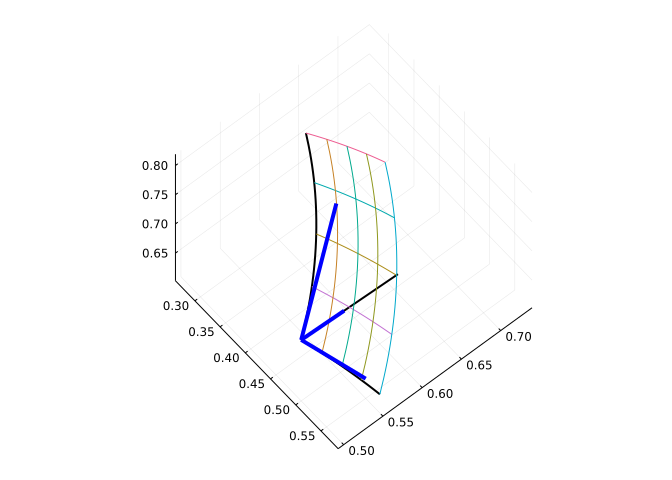
The tangent vectors found from the partial derivatives of \(\vec{r}\):
\[\begin{align*} \frac{\partial{\vec{r}}}{\partial{r}} &= \langle \cos(\theta) \cdot \sin(\phi), \sin(\theta) \cdot \sin(\phi), \cos(\phi)\rangle,\\ \frac{\partial{\vec{r}}}{\partial{\theta}} &= \langle -r\cdot\sin(\theta)\cdot\sin(\phi), r\cdot\cos(\theta)\cdot\sin(\phi), 0\rangle,\\ \frac{\partial{\vec{r}}}{\partial{\phi}} &= \langle r\cdot\cos(\theta)\cdot\cos(\phi), r\cdot\sin(\theta)\cdot\cos(\phi), -r\cdot\sin(\phi) \rangle. \end{align*}\]
With this, we have \(h_r=1\), \(h_\theta=r\sin(\phi)\), and \(h_\phi = r\). So that
\[\begin{align*} dl &= \sqrt{dr^2 + (r\sin(\phi)d\theta^2) + (rd\phi)^2},\\ dS_r &= r^2\sin(\phi)d\theta d\phi,\\ dS_\theta &= rdr d\phi,\\ dS_\phi &= r\sin(\phi)dr d\theta, \quad\text{and}\\ dV &= r^2\sin(\phi) drd\theta d\phi. \end{align*}\]
The following visualizes the volume and the surface elements.
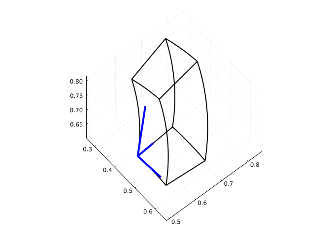
61.7.2 The gradient in a new coordinate system
If \(f\) is a scalar function then \(df = \nabla{f} \cdot d\vec{r}\) by the chain rule. Using the curvilinear coordinates:
\[\begin{align*} df &= \frac{\partial{f}}{\partial{u}} du + \frac{\partial{f}}{\partial{v}} dv + \frac{\partial{f}}{\partial{w}} dw \\ &= \frac{1}{h_u}\frac{\partial{f}}{\partial{u}} h_udu + \frac{1}{h_v}\frac{\partial{f}}{\partial{v}} h_vdv + \frac{1}{h_w}\frac{\partial{f}}{\partial{w}} h_wdw. \end{align*}\]
But, as was used above, \(d\vec{r} \cdot \hat{e}_u = h_u du\), etc. so \(df\) can be re-expressed as:
\[ df = (\frac{1}{h_u}\frac{\partial{f}}{\partial{u}}\hat{e}_u + \frac{1}{h_v}\frac{\partial{f}}{\partial{v}}\hat{e}_v + \frac{1}{h_w}\frac{\partial{f}}{\partial{w}}\hat{e}_w) \cdot d\vec{r} = \nabla{f} \cdot d\vec{r}. \]
The gradient is the part within the parentheses.
As an example, in cylindrical coordinates, we have \(h_r =1\), \(h_\theta=r\), and \(h_z=1\), giving:
\[ \nabla{f} = \frac{\partial{f}}{\partial{r}}\hat{e}_r + \frac{1}{r}\frac{\partial{f}}{\partial{\theta}}\hat{e}_\theta + \frac{\partial{f}}{\partial{z}}\hat{e}_z \]
61.7.3 The divergence in a new coordinate system
The divergence is a result of the limit of a surface integral,
\[ \nabla \cdot F = \lim \frac{1}{\Delta{V}}\oint_S F \cdot \hat{N} dS. \]
Taking \(V\) as a box in the curvilinear coordinates, with side lengths \(h_udu\), \(h_vdv\), and \(h_wdw\) the surface integral is computed by projecting \(F\) onto each normal area element and multiplying by the area. The task is similar to how the the divergence was derived above, only now the terms are like \(\partial{(F_uh_vh_w)}/\partial{u}\) due to the scale factors (\(F_u\) is the u component of \(F\).) The result is:
\[ \nabla\cdot F = \frac{1}{h_u h_v h_w}\left[ \frac{\partial{(F_uh_vh_w)}}{\partial{u}} + \frac{\partial{(h_uF_vh_w)}}{\partial{v}} + \frac{\partial{(h_uh_vF_w)}}{\partial{w}} \right]. \]
For example, in cylindrical coordinates, we have
\[ \nabla \cdot F = \frac{1}{r} \left[ \frac{\partial{F_r r}}{\partial{r}} + \frac{\partial{F_\theta}}{\partial{\theta}} + \frac{\partial{F_x}}{\partial{z}} \right]. \]
61.7.4 The curl in a new coordinate system
The curl, like the divergence, can be expressed as the limit of an integral:
\[ (\nabla \times F) \cdot \hat{N} = \lim \frac{1}{\Delta{S}} \oint_C F \cdot d\vec{r}, \]
where \(S\) is a surface perpendicular to \(\hat{N}\) with boundary \(C\). For a small rectangular surface, the derivation is similar to above, only the scale factors are included. This gives, say, for the \(\hat{e}_u\) normal, \(\frac{\partial{(h_zF_z)}}{\partial{y}} - \frac{\partial{(h_yF_y)}}{\partial{z}}\). The following determinant form combines the terms compactly:
\[ \nabla\times{F} = \det \begin{bmatrix} h_u\hat{e}_u & h_v\hat{e}_v & h_w\hat{e}_w \\ \frac{\partial}{\partial{u}} & \frac{\partial}{\partial{v}} & \frac{\partial}{\partial{w}} \\ h_uF_u & h_v F_v & h_w F_w \end{bmatrix}. \]
For example, in cylindrical coordinates, the curl is:
\[ \det \begin{bmatrix} \hat{r} & r\hat{\theta} & \hat{k} \\ \frac{\partial}{\partial{r}} & \frac{\partial}{\partial{\theta}} & \frac{\partial}{\partial{z}} \\ F_r & rF_\theta & F_z \end{bmatrix} \]
Applying this to the function \(F(r,\theta, z) = \hat{\theta}\) we get:
\[ \text{curl}(F) = \det \begin{bmatrix} \hat{r} & r\hat{\theta} & \hat{k} \\ \frac{\partial}{\partial{r}} & \frac{\partial}{\partial{\theta}} & \frac{\partial}{\partial{z}} \\ 0 & r & 0 \end{bmatrix} = \hat{k} \det \begin{bmatrix} \frac{\partial}{\partial{r}} & \frac{\partial}{\partial{\theta}}\\ 0 & r \end{bmatrix} = \hat{k}. \]
As \(F\) represents a vector field that rotates about the \(z\) axis at a constant rate, the magnitude of the curl should be a constant and it should point in the \(\hat{k}\) direction, as we found.
61.8 Questions
Question
Numerically find the divergence of \(F(x,y,z) = \langle xy, yz, zx\rangle\) at the point \(\langle 1,2,3\rangle\).
Question
Numerically find the curl of \(F(x,y,z) = \langle xy, yz, zx\rangle\) at the point \(\langle 1,2,3\rangle\). What is the \(x\) component?
Question
Let \(F(x,y,z) = \langle \sin(x), e^{xy}, xyz\rangle\). Find the divergence of \(F\) symbolically.
Question
Let \(F(x,y,z) = \langle \sin(x), e^{xy}, xyz\rangle\). Find the curl of \(F\) symbolically. What is the \(x\) component?
Question
Let \(\phi(x,y,z) = x + 2y + 3z\). We know that \(\nabla\times\nabla{\phi}\) is zero by the vanishing property. Compute \(\nabla\cdot\nabla{\phi}\).
Question
In two dimension’s the curl of a gradient field simplifies to:
\[ \nabla\times\nabla{f} = \nabla\times \langle\frac{\partial{f}}{\partial{x}}, \frac{\partial{f}}{\partial{y}}\rangle = \frac{\partial{\frac{\partial{f}}{\partial{y}}}}{\partial{x}} - \frac{\partial{\frac{\partial{f}}{\partial{x}}}}{\partial{y}}. \]
Question
Based on this vector-field plot
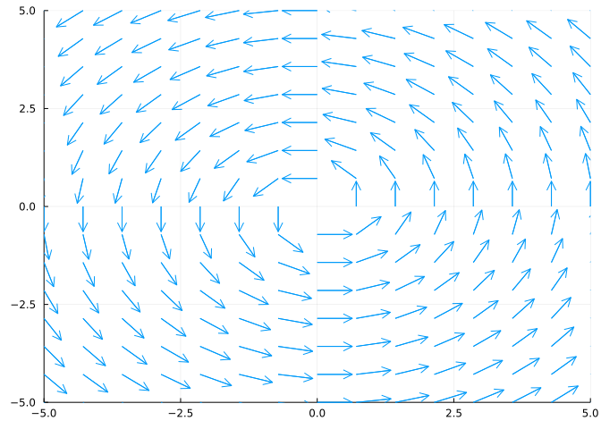
which seems likely
Question
Based on this vectorfield plot
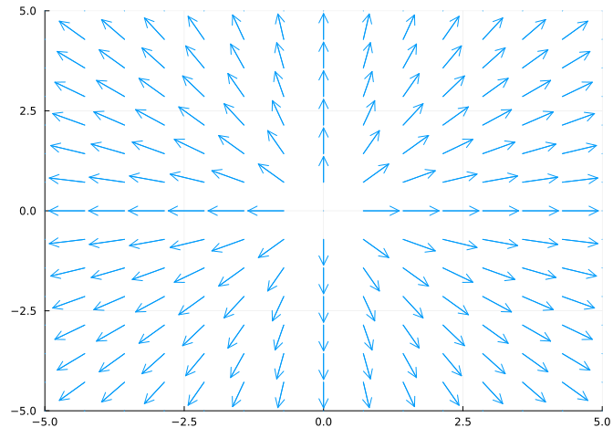
which seems likely
Question
The electric field \(E\) (by Maxwell’s equations) satisfies:
Question
The magnetic field \(B\) (by Maxwell’s equations) satisfies:
Question
For spherical coordinates, \(\Phi(r, \theta, \phi)=r \langle \sin\phi\cos\theta,\sin\phi\sin\theta,\cos\phi\rangle\), the scale factors are \(h_r = 1\), \(h_\theta=r\sin\phi\), and \(h_\phi=r\).
The curl then will then be
\[ \nabla\times{F} = \det \begin{bmatrix} \hat{e}_r & r\sin\phi\hat{e}_\theta & r\hat{e}_\phi \\ \frac{\partial}{\partial{r}} & \frac{\partial}{\partial{\theta}} & \frac{\partial}{\partial{phi}} \\ F_r & r\sin\phi F_\theta & r F_\phi \end{bmatrix}. \]
For a radial function \(F = h(r)e_r\). (That is \(F_r = h(r)\), \(F_\theta=0\), and \(F_\phi=0\). What is the curl of \(F\)?